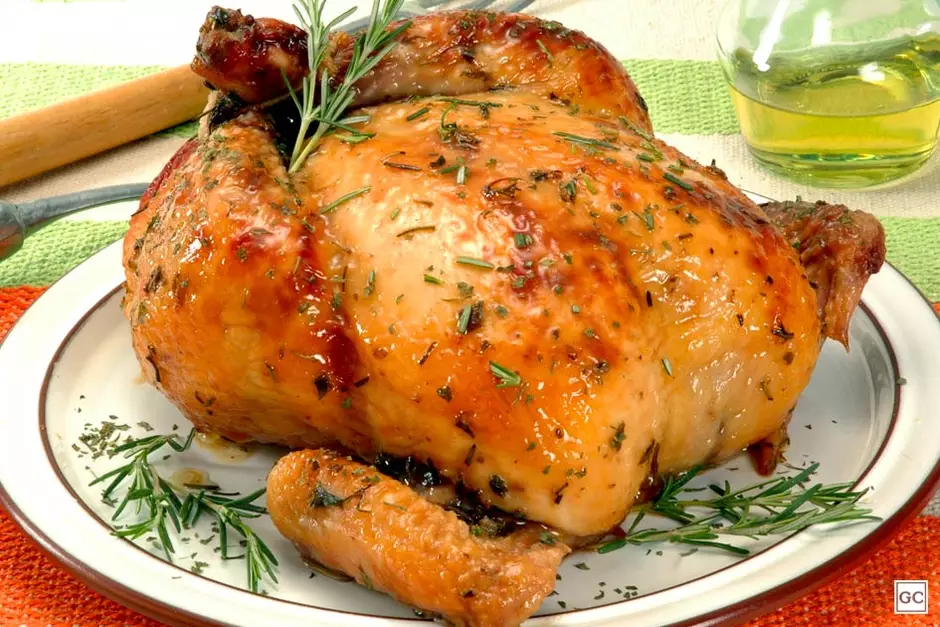
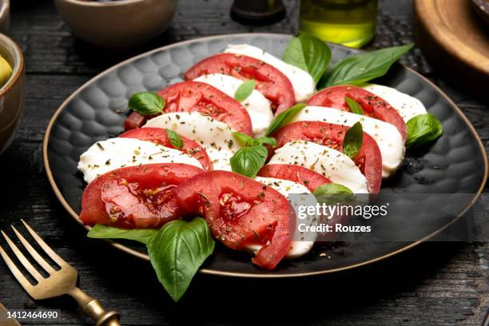
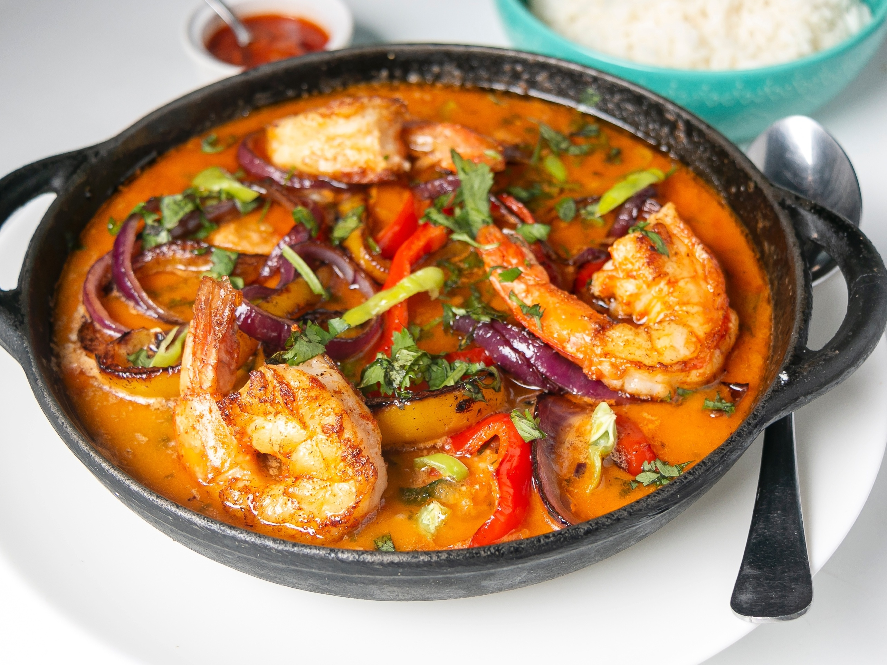

Receitas em Destaque
Um cremoso risoto italiano com cogumelos frescos e queijo parmesão

30 minutos
médio
4 porções
Frango suculento assado com ervas frescas e limão

60 minutos
fácil
6 porções
Salada italiana clássica com tomate, mozzarella e manjericão

15 minutos
fácil
2 porções

Prato brasileiro tradicional com peixe, leite de coco e dendê

15 minutos
fácil
2 porções